第一階段成果展示與第二階段機電感測升級提案
專用 APP ＋ 本地端資料庫平台建立
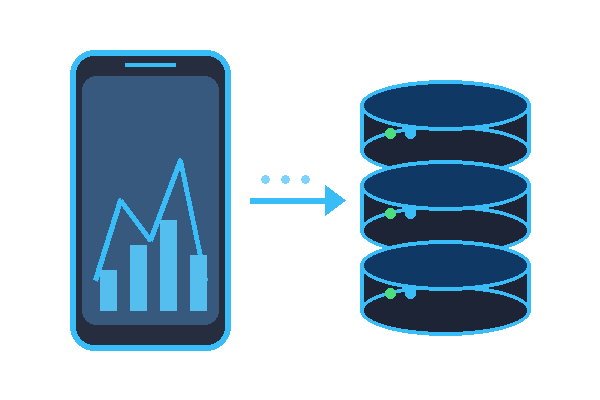
導入更多機台 ＆ 擴展資料的深度與廣度
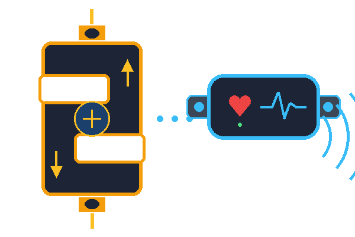
AI 大數據建模與個人化處方
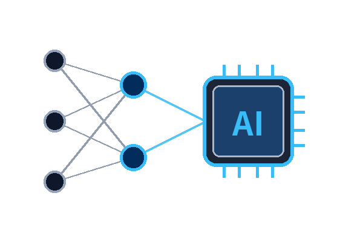
採集速度拉力（編碼器、荷重元與心率模組）。
BLE 傳輸、即時曲線繪製與自動上傳。
存儲設備資訊、運動數據，累積為 AI 專屬訓練資料庫。
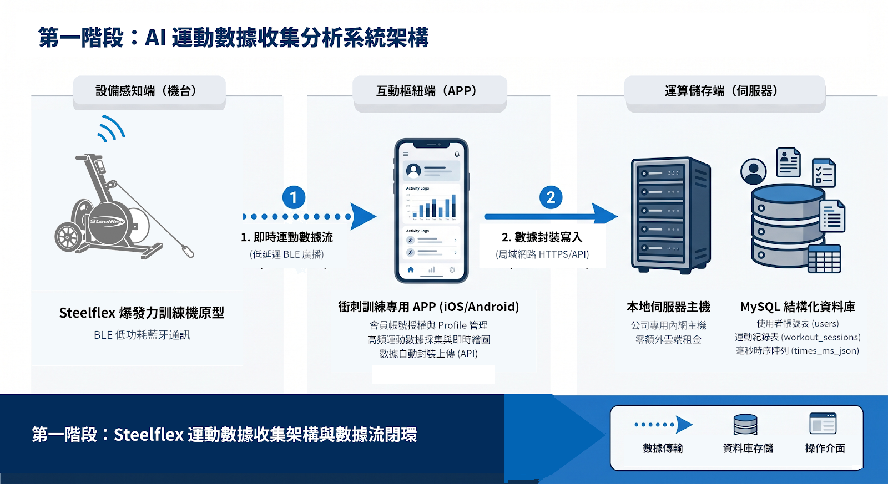
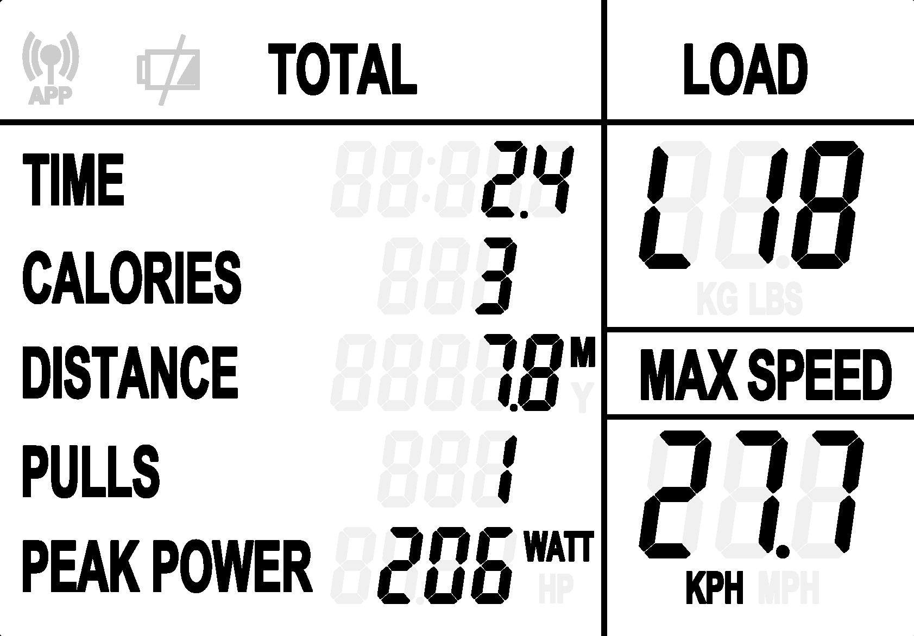
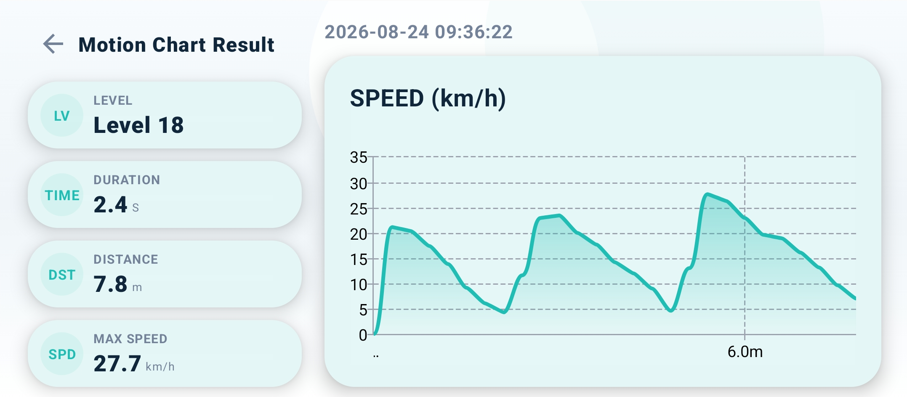
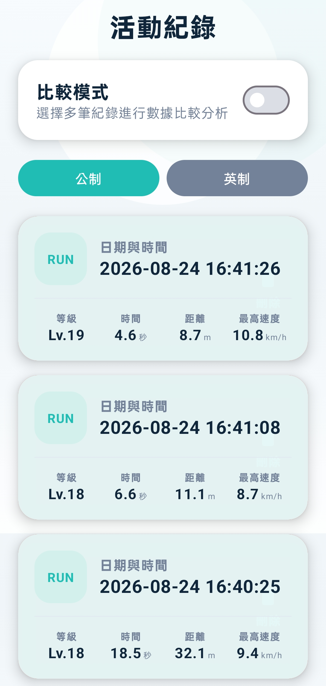
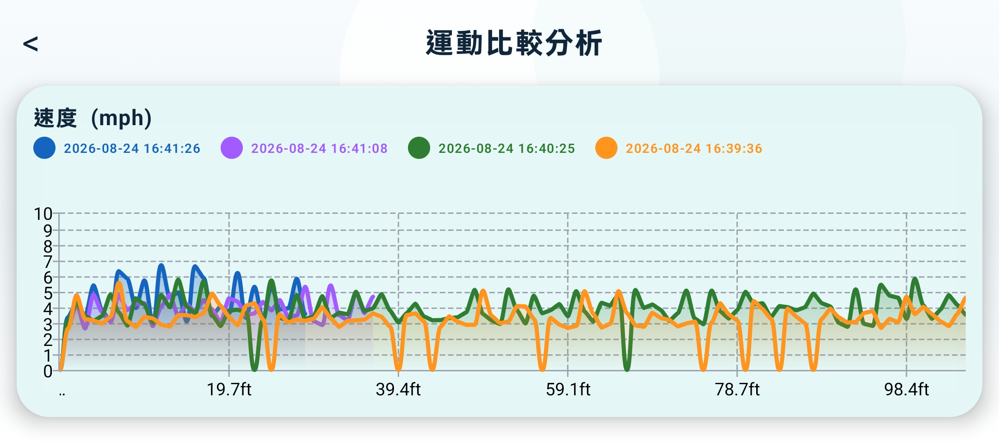
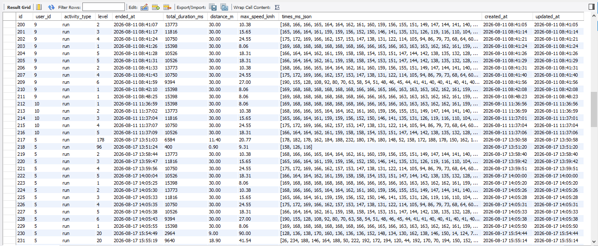
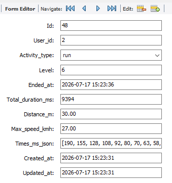
少數幾十筆零散紀錄無法訓練出具備泛化能力的 AI。在演算法發揮商業價值前，首要任務是累積數千至數萬筆真實訓練時序，形成統計樣本母體。
若只有速度單一維度，AI 無法推論出力學代償與中樞疲勞。缺乏「拉力、加速度與心率」等核心特徵，再龐大的數據庫也只是無法消化的雜訊。
協助機台進入合作場館與體能中心，透過制度與 APP 體驗設計，大幅激勵使用者持續連線並主動上傳運動紀錄，快速跨越資料量門檻。
加裝「編碼器、荷重元 (Load Cell) 與 BLE 心率模組」，把每次採集的特徵維度補齊，確保業務端帶回來的每一筆資料都是具備 AI 價值的黃金資產。
提供模組化升級套件，既有機台直接更換新版智慧儀表，即可無痛連線 APP 進入數位閉環。
將公司現有運動產品逐步升級導入感測元件（Load Cell、編碼器等），結合 APP 自動上傳數據。
推進產業結盟，提供機台設備給社區活動中心或高齡社福場域進行建置，擴大並深耕真實數據收集。
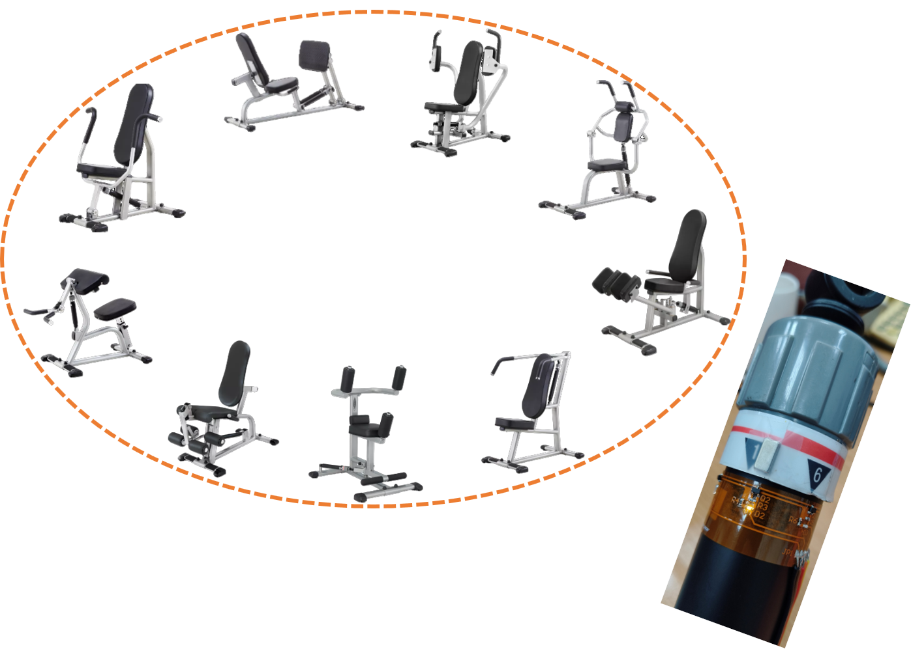
第一階段已證明我們能以極低成本打通數據鏈路；誠摯請求主管支持第二階段推進，建立機台核心技術壁壘。
• 感測元件打樣與採購費用（編碼器、Load Cell、BLE 心率接收模組）
• 機構微調與打樣工時支援
• 掌握關鍵機電感知整合技術，拉開競品差距
• 建立高維度運動資料集，奠定 AI 商業價值
核心結論：儲存空間可存 800 萬筆紀錄，瓶頸在瞬時併發。第二階段續用本地伺服器無額外成本，待規模化商轉或AI 算力需求出現再行遷移。
• 1 TB SSD 實用 800 GB 計算（每萬筆約 1 GB）
• 每日 1,000 人次訓練，足以存儲 20 年以上
• 現有主機每秒可處理 100～300 次寫入
• 足以支撐 50～100 家場館 同時運作（數萬名會員）